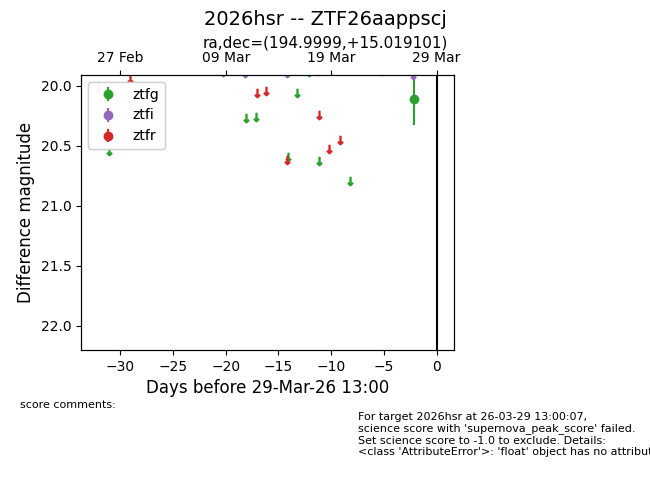
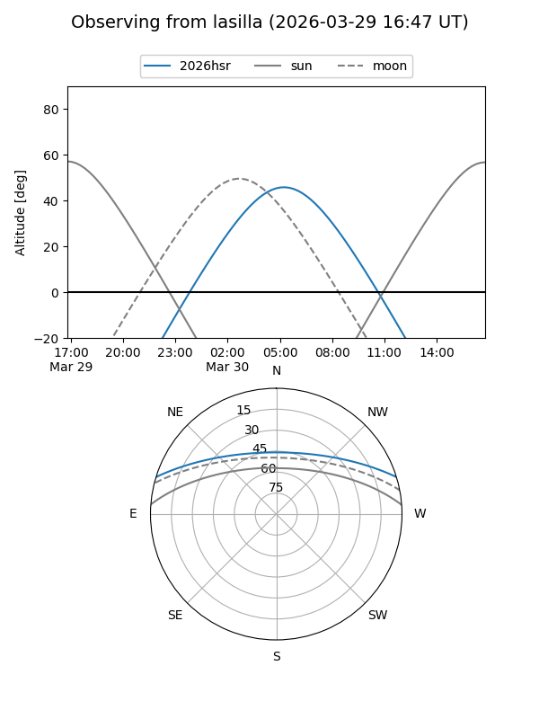
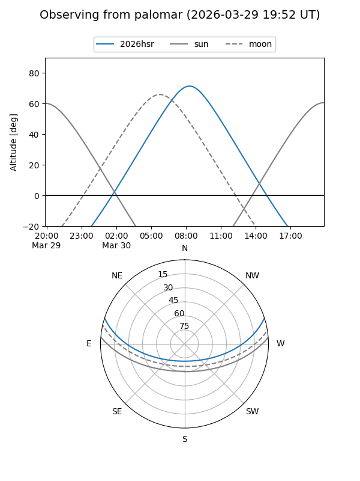

2026hsr
Target 2026hsr at 2026-03-29 13:03
Aliases and brokers:
FINK: link
Lasair: link
ALeRCE: link
TNS: link
YSE: link
alt names
ZTF26aappscj (ztf,fink_ztf)
2026hsr (tns,yse)
Coordinates:
equatorial (ra, dec) = 194.9999,+15.01910
equatorial (HMS+DMS) = 12:59:59.97,+15:01:08.76
galactic (l, b) = (312.7030,+77.72812)
Flags:
Photometry:
last ztfg=20.11
1 ztfg detections
Lightcurve

Visibility


Additional plots